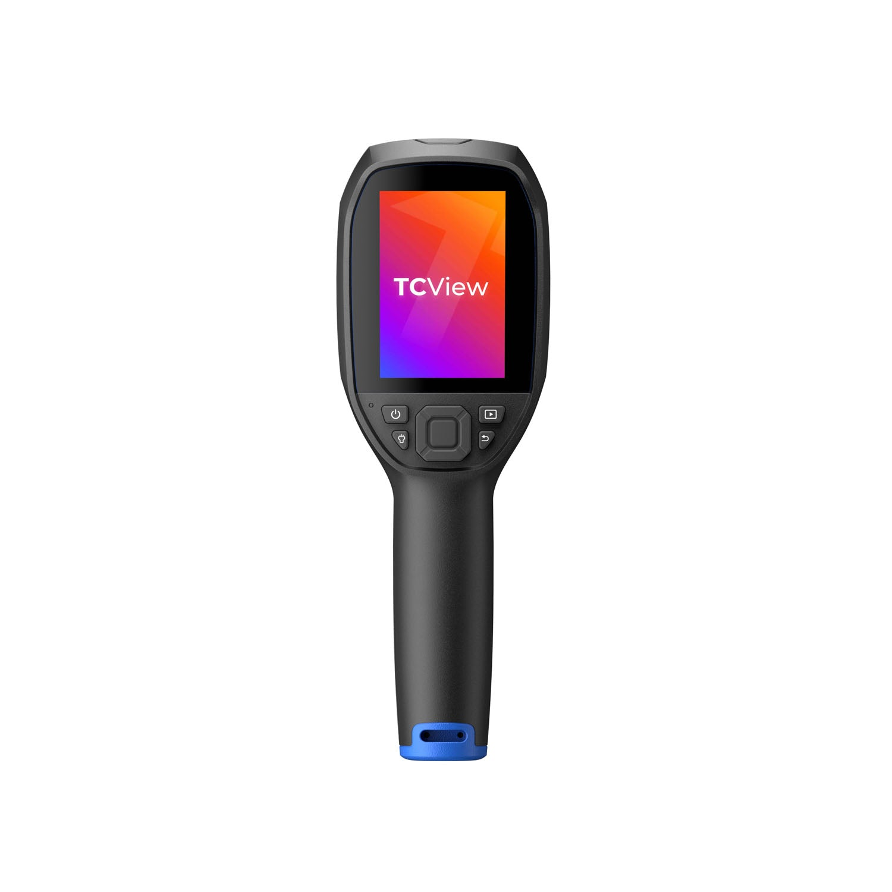
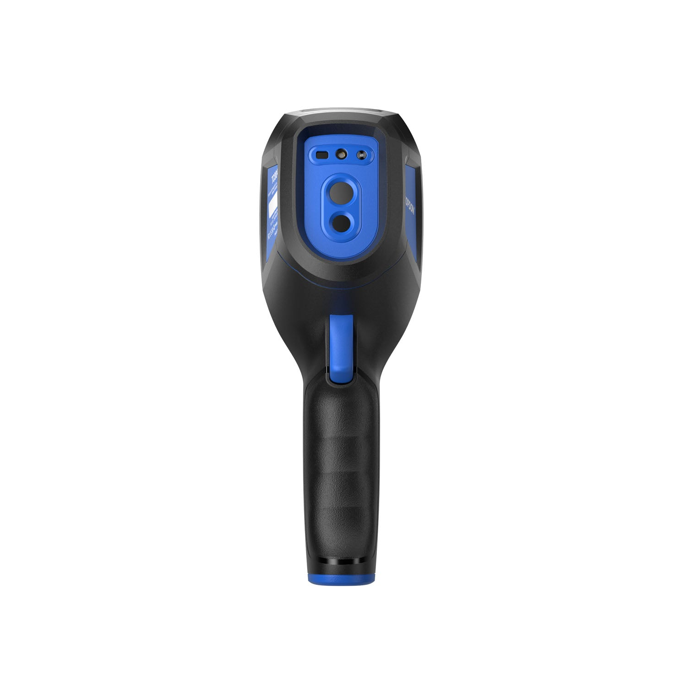
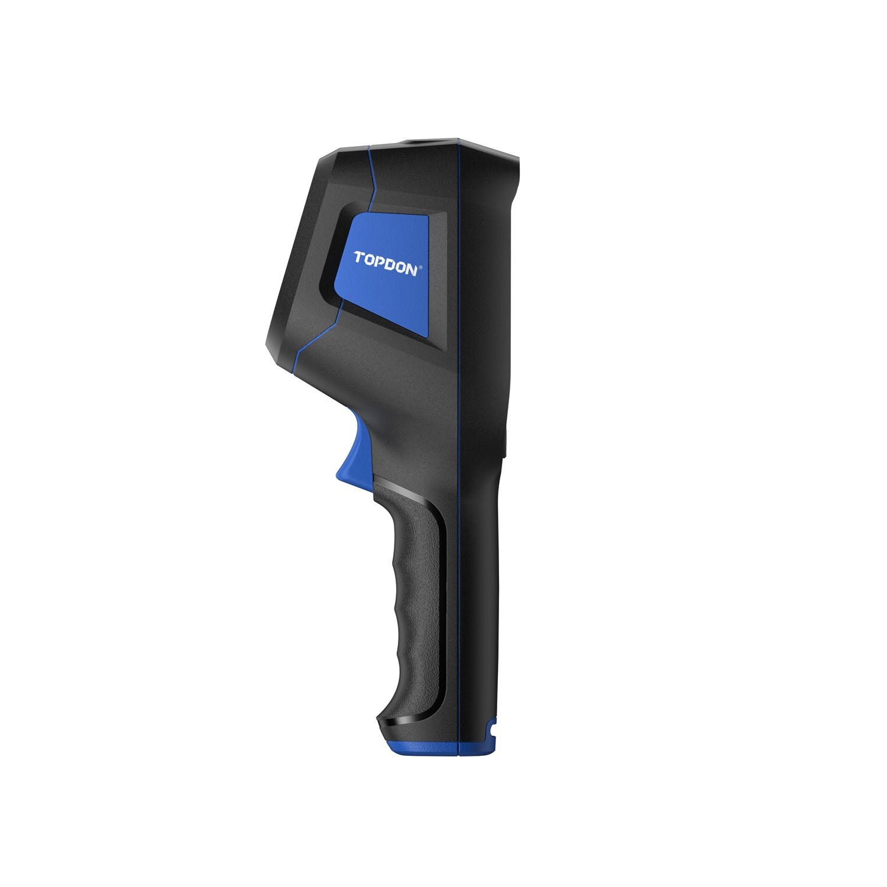

Home / Detection & Field Gear / Handheld thermal camera, 256 class
Detection & Field Gear · Thermal
Handheld Thermal Camera, 256×192 — TOPDON TC004
$549 ships from us after payment
- TOPDON TC004 handheld thermal camera — 256×192 sensor
- 3.5-inch display, 25 Hz, laser pointer and LED work light
- Heat contrast for roofs, panels, plants, and dark lanes
- IP54 housing, 2 m drop rating
- Built-in 5,000 mAh cell, USB-C charge
Sold by Dark Sky Systems LLC. Card via Stripe.